Vallaris Maps / Training Manual
คู่มือการประมวลผลข้อมูลด้วย Vallaris Maps
คู่มือสำหรับจัดเตรียม Module ออกแบบ Data Pipeline และสั่งประมวลผลข้อมูลดาวเทียม THEOS ARD ผ่านระบบ Vallaris Maps
1. ระบบการประมวลผลข้อมูล
Vallaris Maps รองรับการประมวลผลข้อมูลเชิงพื้นที่ผ่านมาตรฐาน OGC API Processes โดยเชื่อมต่อหน่วยประมวลผลย่อย (Module) เป็นลำดับงาน (Data Pipeline) เพื่อให้กำหนดการรับข้อมูล การประมวลผล และการเผยแพร่ผลลัพธ์ได้ตามความต้องการ
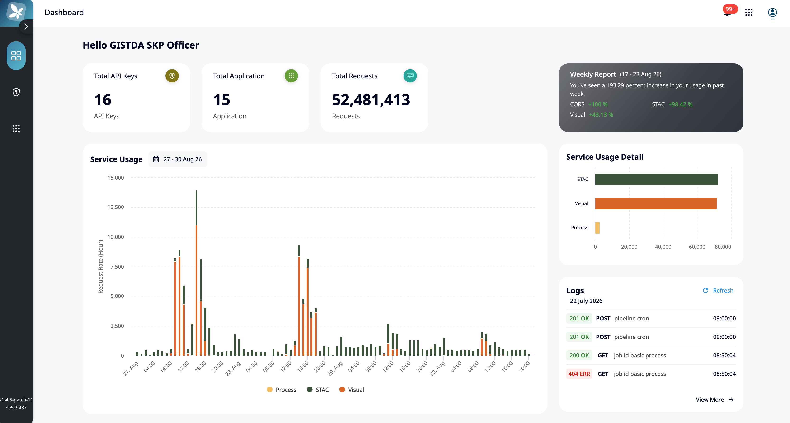
1.1 ความสามารถของระบบ Vallaris
- จัดการและเรียกใช้ Module สำหรับประมวลผลข้อมูลเชิงพื้นที่
- ออกแบบ Data Pipeline แบบเชื่อมต่อขั้นตอนการทำงาน
- กำหนดค่าพารามิเตอร์ อินพุต และผลลัพธ์ของแต่ละขั้นตอน
- ตั้งเวลาเรียกใช้ Pipeline เพื่อประมวลผลข้อมูลแบบอัตโนมัติ
- ตรวจสอบสถานะและบันทึกผลการทำงานผ่านหน้า Dashboard
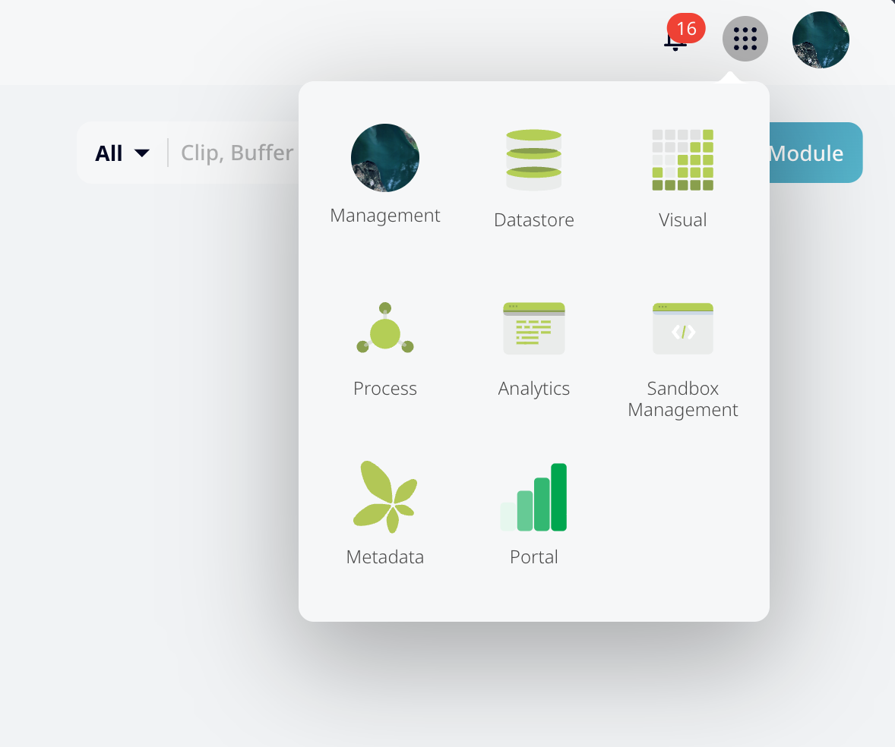
2. การเข้าใช้งานระบบ
เปิดหน้า Vallaris Maps Management แล้วเข้าสู่ระบบด้วยบัญชีผู้ใช้งานที่ได้รับสิทธิ์ จากนั้นเลือกพื้นที่ทำงานที่ต้องการ
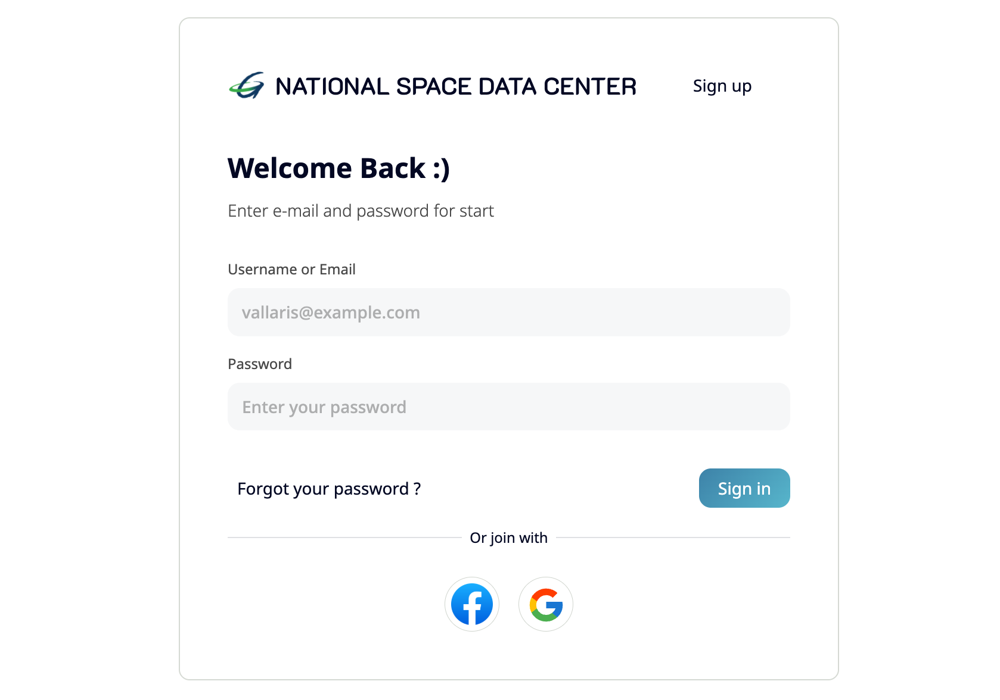
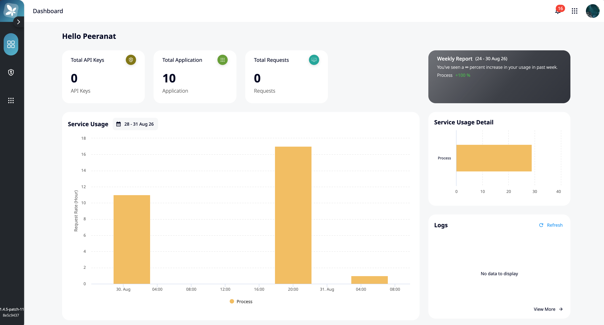
3. Workshop การสร้างหน่วยประมวลผลย่อย (Module)
Vallaris Module คืออะไร
Module คือหน่วยประมวลผลย่อยที่นำกลับมาใช้ซ้ำได้ ระบบมี Module สำเร็จรูปมากกว่า 50 รายการ และสามารถเพิ่ม Module ใหม่ให้เหมาะกับกระบวนการของหน่วยงานได้
- Raster
- Vector
- Database
- File management
- Image processing
- Data conversion
- Statistics
- Machine learning
- Publish service
- Utility
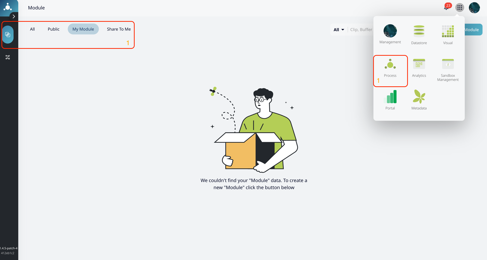
3.1 การ Add Module เข้าสู่ระบบ
ไฟล์ Module ประกอบด้วย perform.py สำหรับเขียนขั้นตอนการประมวลผล และไฟล์ perform.yaml สำหรับกำหนดรายละเอียด อินพุต เอาต์พุต และพารามิเตอร์ที่จะแสดงบนระบบ
วิธีการ Add Module
- ไปที่เมนู Process แล้วเลือก Module
- เลือก Add Module และอัปโหลดไฟล์ Module ที่จัดเตรียมไว้
- ตรวจสอบรายละเอียดและสถานะการนำเข้าในหน้า Module หรือ Log ของระบบ
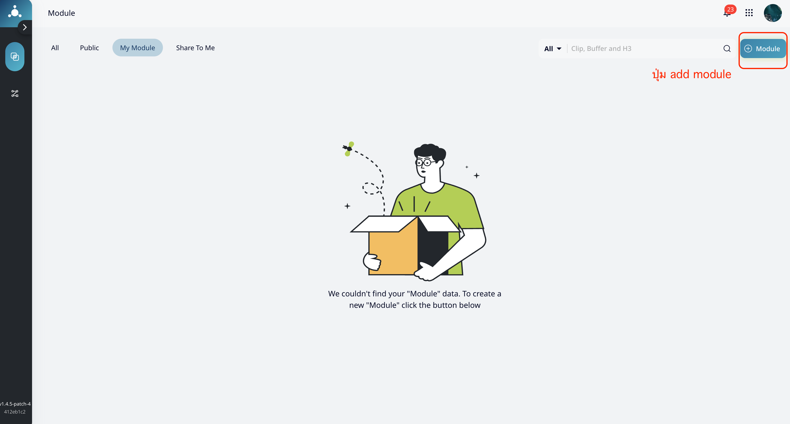
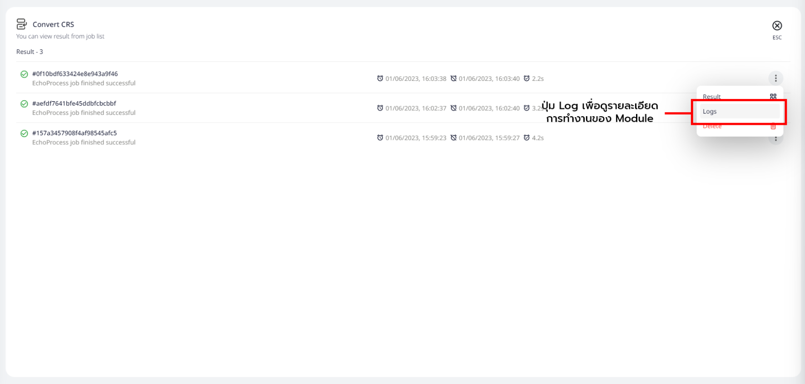
ตัวอย่าง code module perform.py
import vallaris
import geopandas as gpd
def perform(storage, parameter):
input_file = storage.get_file(parameter["input_file"])
distance = parameter["distance"]
output_file = storage.get_file(parameter["output_file"])
data = gpd.read_file(input_file)
result = data.buffer(distance)
result.to_file(output_file, driver="GeoJSON")
return {"output_file": output_file}ตัวอย่างรูปแบบการเขียน perform.yaml
id: Buffer
name: Buffer
description: Buffer vector data
version: 1.0.0
command: python perform.py
inputs:
- id: input_file
type: file
title: Input vector file
- id: distance
type: number
title: Buffer distance
outputs:
- id: output_file
type: file
title: Output GeoJSON file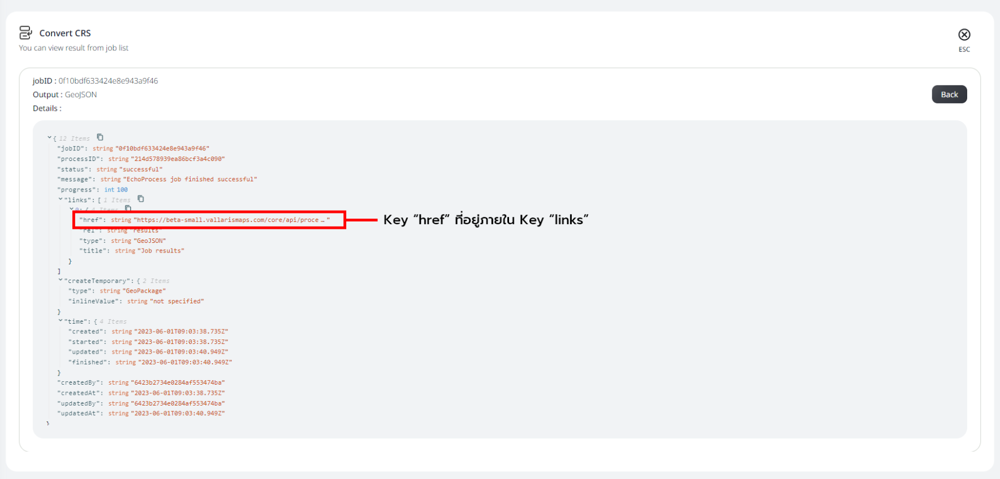
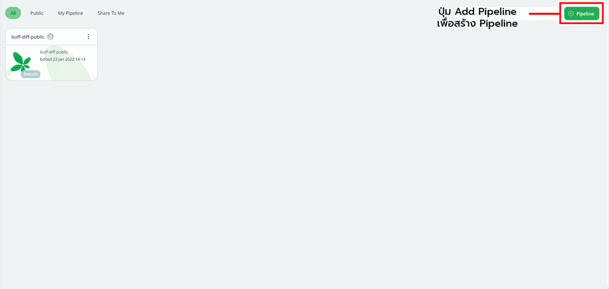
4. Workshop การสร้างหน่วยประมวลผล Data Pipeline
Data Pipeline คือการนำ Module มาเชื่อมต่อกันเป็นลำดับงานเดียว สามารถกำหนดให้ทำงานแบบสั่งรันทันที (Execute) หรือตั้งรอบเวลา (Schedule) ได้
วิธีการ Create Pipeline
- เลือกเมนู Process แล้วเลือก Pipeline
- กด Add Pipeline เพื่อสร้างรายการใหม่
- ลาก Module ที่ต้องการลงบนพื้นที่ออกแบบ และเชื่อม Output ของขั้นตอนก่อนหน้ากับ Input ของขั้นตอนถัดไป
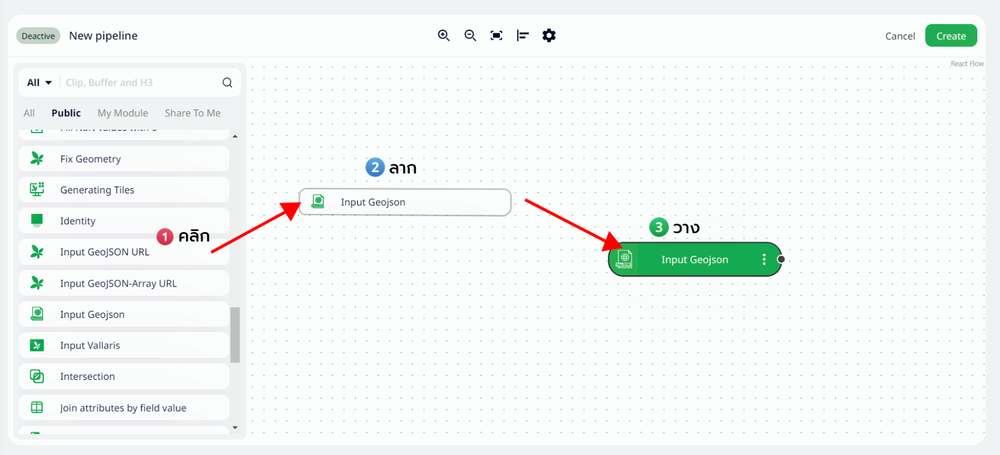
ตั้งค่าและเพิ่มรายละเอียด Pipeline
ระบุ Name, Description และ Type ของ Pipeline จากนั้นกำหนด Execution Type เป็น Execute หรือ Schedule หากต้องการตั้งเวลา สามารถอ้างอิงรูปแบบ Cron ได้จาก crontab.guru
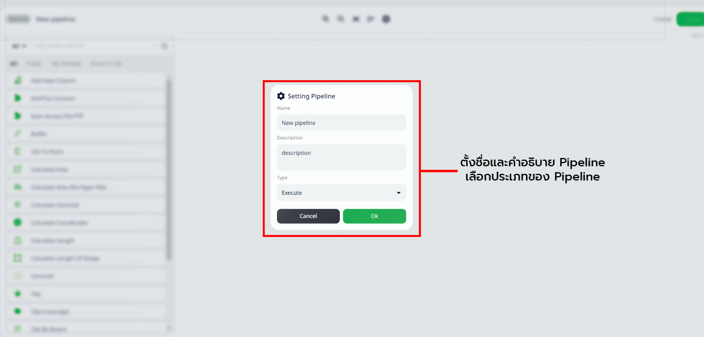
วิธีการ Execute และแก้ไข Pipeline
เลือก Pipeline ที่ต้องการแล้วกด Execute เพื่อตรวจสอบผลการทำงาน สำหรับการแก้ไข ให้เปิด Pipeline เดิม ปรับ Module หรือเส้นเชื่อม แล้วบันทึกการเปลี่ยนแปลง
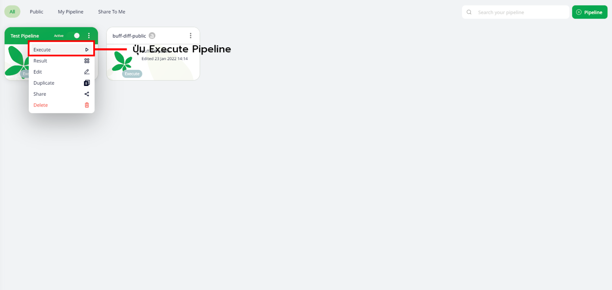
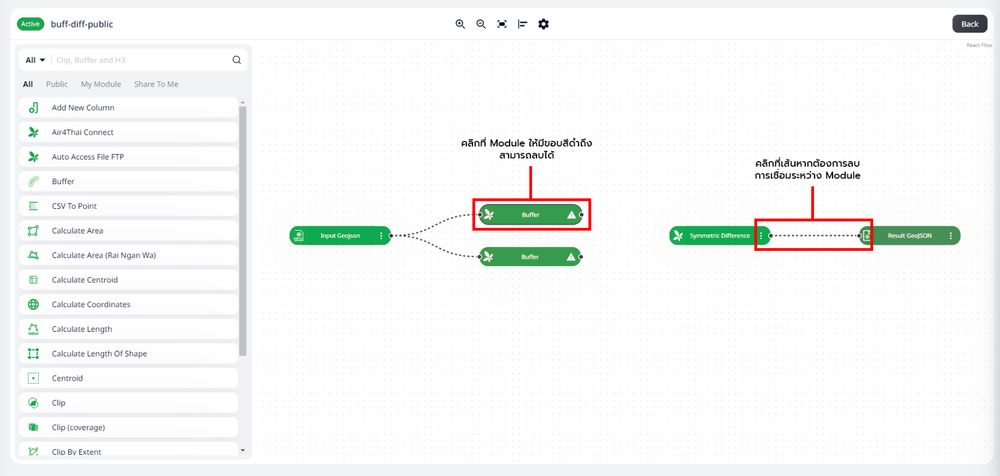
5. Workshop การประมวลผลข้อมูล THEOS ARD
ตัวอย่าง THEOS ARD ใช้ Module process_theos ร่วมกับการรับข้อมูลจาก S3 การสร้าง Coverage และการเผยแพร่ STAC
perform.py และ perform.yaml ดาวน์โหลด Visual Studio Codeจัดเตรียม Module
| ลำดับ | Module | วัตถุประสงค์ | ดาวน์โหลด |
|---|---|---|---|
| 1 | Input_s3 | รับข้อมูลนำเข้าจาก S3 | ดาวน์โหลด Module |
| 2 | process_theos | ประมวลผลข้อมูล THEOS ARD | ดาวน์โหลด Module |
| 3 | create_coverage | สร้าง Coverage Collection | ดาวน์โหลด Module |
| 4 | publish_stac | เผยแพร่ Metadata ในรูปแบบ STAC | ดาวน์โหลด Module |
| 5 | verify_result | ตรวจสอบผลลัพธ์การประมวลผล | ดาวน์โหลด Module |
สร้าง Data Pipeline
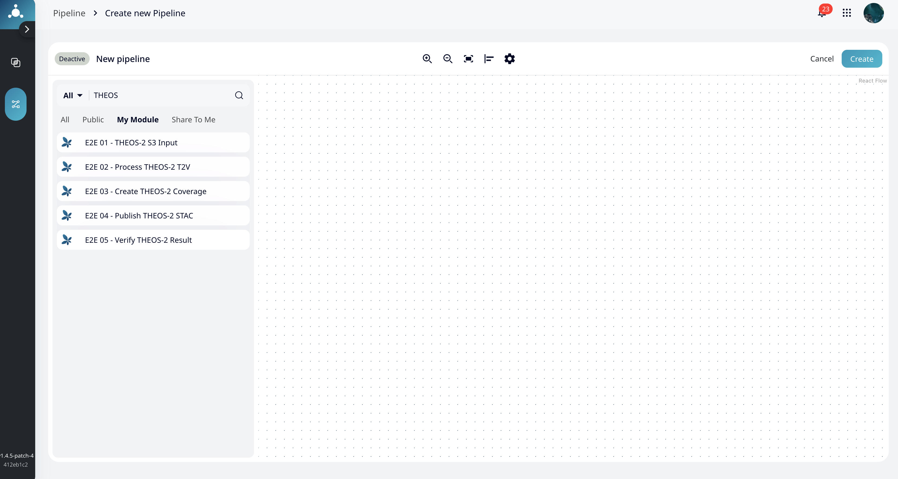
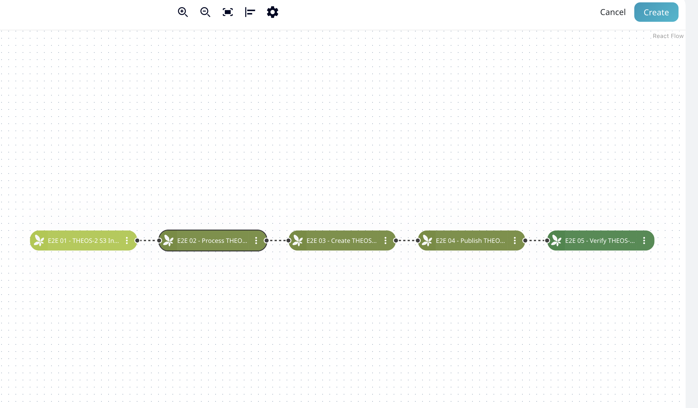
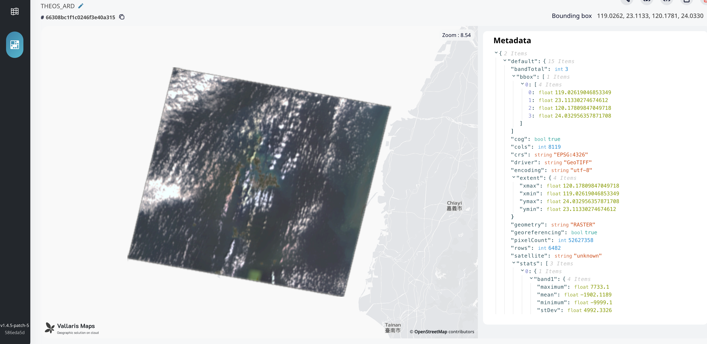
หมายเหตุ: ก่อนใช้งานจริง ผู้ดูแลระบบควรตรวจสอบสิทธิ์เข้าถึง S3, การตั้งค่าพารามิเตอร์ และสถานะของลิงก์ดาวน์โหลด Module ให้เหมาะกับระบบปลายทาง